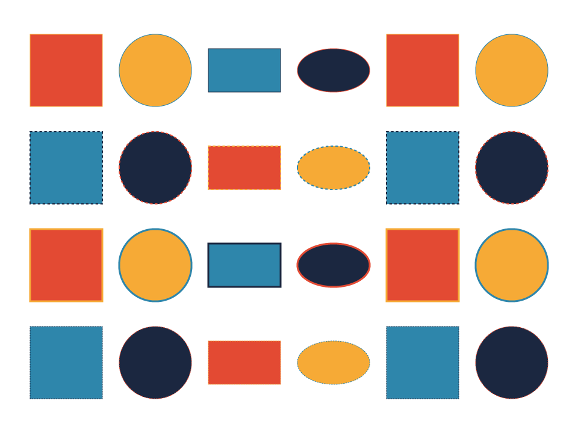
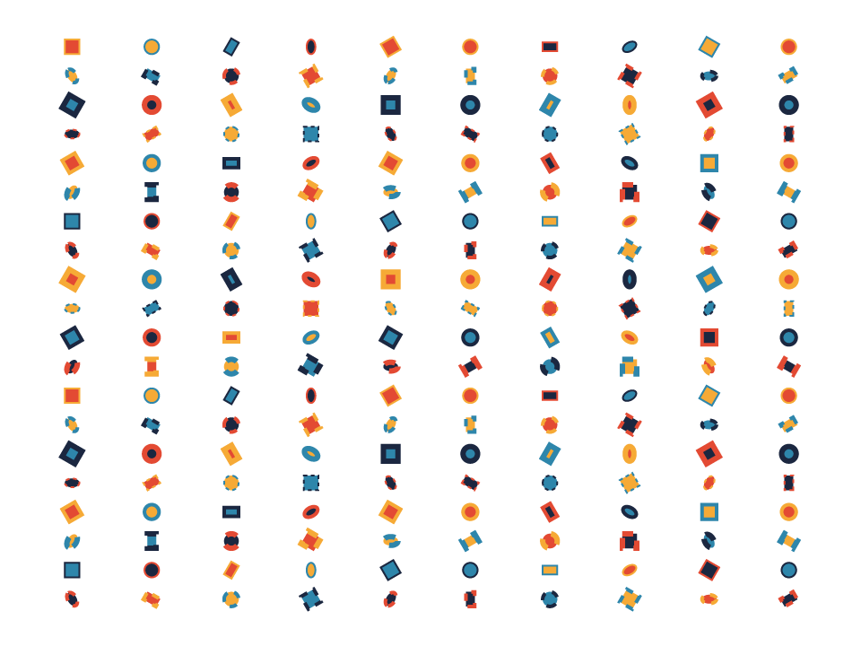
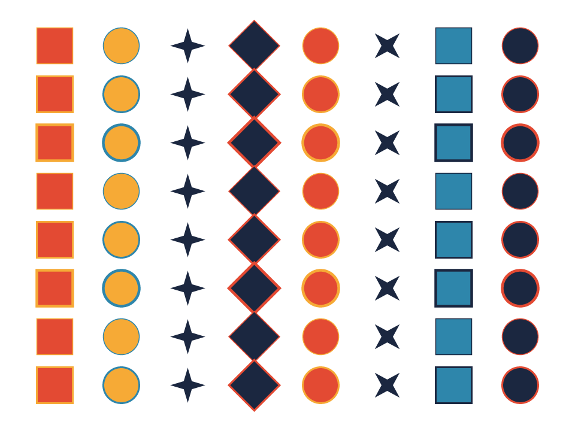
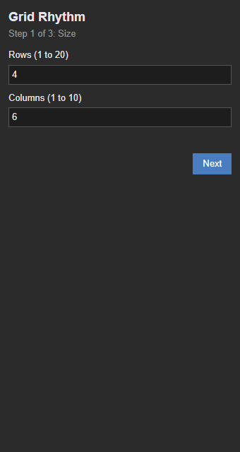
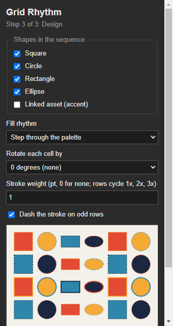

Usage
Grid Rhythm asks three questions in order. Nothing is drawn until the last step.
Step 1: Size the grid
- Open an Illustrator 2026 document, or leave none open. If none is open, Grid Rhythm creates a new one.
- Choose Window > Extensions > Grid Rhythm.
- Enter rows from 1 to 20 and columns from 1 to 10.
- Click Next. The panel moves on only when both values are valid.
Step 2: Choose the pattern mode
- One row pattern: every row repeats the same shape sequence. The grid reads as columns of identical rhythm.
- Alternating rows: the first row uses the sequence in order, and every second row (the 2nd, 4th, and so on) reads it backwards. The grid zig-zags.
- Click Next to reach the design controls, or Back to change the size.
Step 3: Shape the rhythm
The live preview shows the first four rows as you change the controls. The preview is an approximation: Illustrator's final artwork uses the same plan.
| Control | What it changes | Why it is there |
|---|---|---|
| Shapes | Square, circle, rectangle, ellipse, and asset. Shapes are placed in that fixed order, so ticking a shape adds it to the sequence. | The shape list is the beat. Mixing round and square forms gives the eye a contrast to follow. |
| Fill | Step through a four-colour palette, or mirror it across the columns | Stepping gives a steady cadence, and mirror makes the grid symmetrical from the centre out. |
| Rotate | Adds a fixed turn for each cell (0, 15, 30, 45, or 90 degrees) | A small turn per cell breaks the grid into motion without changing the shape count. |
| Stroke weight | Base weight, which cycles through base, double, and triple by row | Changing weight by row creates a second rhythm down the page. |
| Dashes | Dashed stroke on every second row (the 2nd, 4th, and so on) | Dashes give a visual off-beat that matches the alternating pattern. |
| Linked asset | Places the bundled accent as a linked file in its cell | A linked asset keeps the file small and lets you swap the artwork later. |
Click Back to change rows, columns, or pattern mode. Click Draw to build the grid.
What Draw creates
- A layer named Grid Rhythm in the active document, or in a new document if none is open.
- One shape per cell, fitted to the active artboard with even gutters on all sides.
- Linked
.aiplacements for the asset cells. The file is linked, not embedded.
Validation. The panel checks the values before it sends them, and the host script checks them again. If something is wrong, the panel shows a message and nothing is drawn.
Example configurations
These images were exported from Illustrator with the panel's settings. Each one is an artboard export to PNG.



Panel screenshots


Undo and cleanup
Each Draw creates a new layer named Grid Rhythm, so drawing twice gives you two layers with the same name. To start over, delete the layers you do not need, or use Undo right after drawing.